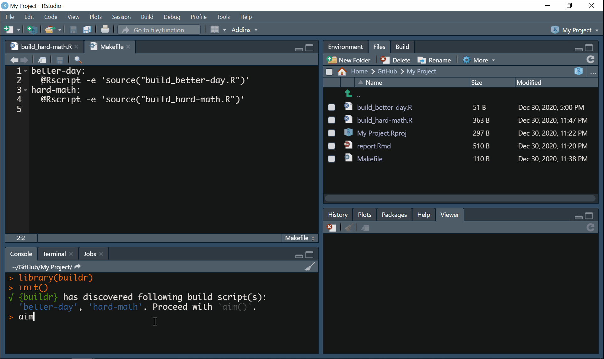
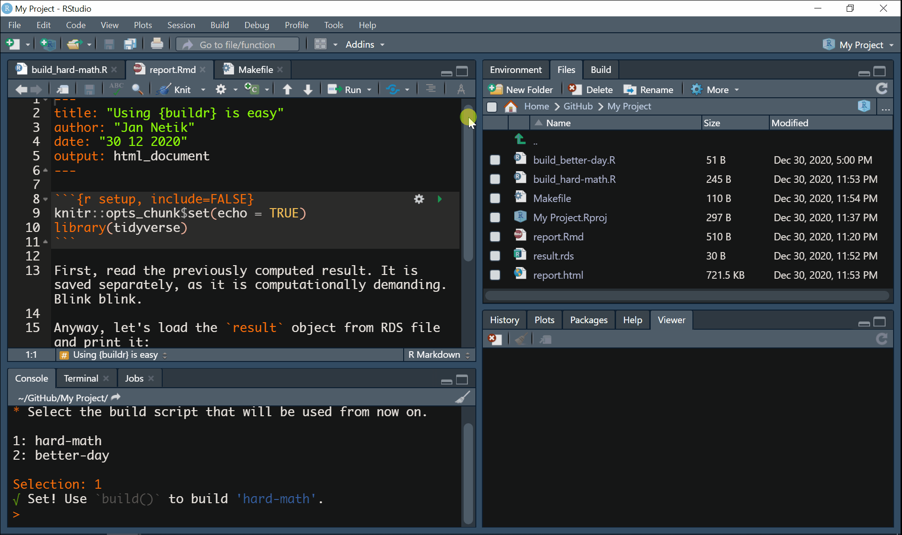

This article extends what README or buildr homepage already briefly described. It’s identical to the vignette, but it includes a bunch of animated examples. After reading it, you’ll be familiar with:
- how to work with buildr using your own keyboard shortcuts
- how buildr works under the hood
- what is a
Makefileand how buildr uses it - tips for some advanced usage
{buildr} + RStudio = ❤️
It’s easy to work with buildr by printing function calls in your R console. However, much more feasible is to use buildr as RStudio Addin, which plays nicely with keyboard shortcuts, adding to the comfort. buildr addin commands are available below your toolbar in RStudio just upon the installation:

Well, that’s pretty neat, but my time is precious and I don’t mean to spend it by clicking around that tiny toolbar.
Likewise! Here come the keyboard shortcuts. The quickest way how to set them up is to use buildr::edit_shortcuts() as shown here (for build() addin command):

Note that all three functions are supported as addin commands. If you stick with recommended defaults, there is no need to use anything else. The only function that may need a richer user input is init(). Let’s describe it in more detail.
Let’s see what you got there
The init() function should be called first (and only occasionally afterwards). It searches your project root (the directory where your .Rproj file resides) and looks for .R scripts that shares a common prefix separated from the rest of a file name by a separator (“build” and "_" by default, respectively). Although it is possible to use different prefix and separator, we recommend that you stick with the default. For more details, please see the reference (documentation) for the init() function.
Those “build scripts” can do really anything, that’s up to you. Commonly, they share the following:
- loading of libraries
- sourcing some
.Rscripts, e.g.,source("run_this.R", encoding = "UTF-8", local = TRUE), which can do a bunch of things, like:
- downloading any remote data
- cleaning them
- estimating some “heavier” models, saving their output
- finally, you’d typically include some rmarkdown call, say
rmarkdown::render("my_report.Rmd")
Here is init() in action:

Line up your bricks
Once the buildr discovered your build scripts, it automatically creates a Makefile in your project root for you and populates it with rules describing how to run your build scripts. Let’s make a little detour and talk more about Makefiles more (you can skip this section if you just want to use the package and do your stuff).
target:
recipeA target is usually a file name, but in our case, it is an arbitrary string uniquely identifying given Makefile rule. A recipe consists of a command describing what to do. In our case, we want to source a .R script, say build_all.R, so our rule would look like this:
all:
@Rscript -e 'source("build_all.R")'The target of our rule is “all” and the recipe instructs the computer to quietly (hence the @) start R and source the script “build_all.R”, which resides in your project root. Note that Makefiles are whitespace sensitive. A tab must always precede the beginning of the recipe. Again, you don’t have to bother with any of this, as the buildr does everything for you.
Now you may wonder why this section is called “Line up your bricks”? That’s simple. The purpose of aim() is to line up the Makefile rules in a particular order because the Rstudio Build pane always takes the first rule available (in fact, you can specify the target manually, but it is buried deep inside the GUI). The goal of aim() is to list your Makefile rules and show them so that you can pick the one you are interested in (i.e. to prioritize it). Your choice then projects in the actual Makefile – the desired rule is in the first place. That’s what aim() does. In case you already know the target of a given rule, you can just supply it directly in the call like this: aim(target = "all") or even simpler aim("all").
Here is aim() in action:

Build
Now that everything is set-up, your only task is to call build(). Under the hood, buildr makes sure that RStudio is set appropriately to handle the Makefile. RStudio Build pane may be set for building packages or websites, so it is crucial to ensure your script is run nice and clean. In case something is wrong, buildr automatically offers you a remedy.
Here is build() in action:

What’s next?
If you’ve already dived into the documentation of the package, you might still wonder what is the purpose of command_args argument of init(). When the build script is processed in RStudio Build pane, the recipe may be accompanied by so-called “command argument”. This argument can be picked up by R and used in your build script to further specify how it should be run. In order to use it, state your command argument when you initialize the Makefile using init(command_arg = "my_argument") or manually. Note that the command argument will be placed after each rule’s recipe. In future updates, this may accommodate a vector of command arguments, but there are many things to solve yet. Then, include the following line to your script:
command_args <- commandArgs(trailingOnly = TRUE)
The object command_args that you’ve created by the assignment will comprise the command argument stated in Makefile when it is run, and you can further use it inside your script. E.g., you can query whether specific command argument was passed by if ("my_arg" %in% command_args) {print("Yes")} else {print("No")}.
I want more complexity!
The buildr was made with simplicity in mind. It helps you bind a given script with a single keystroke using only a handful of functions. The content of such script is completely up to you. What you code is what you get.
However, if you don’t mind delving a bit into new and slightly complicated things, I warmly recommend you to take a look at drake package or at its successor, targets.
And as always, happy building!